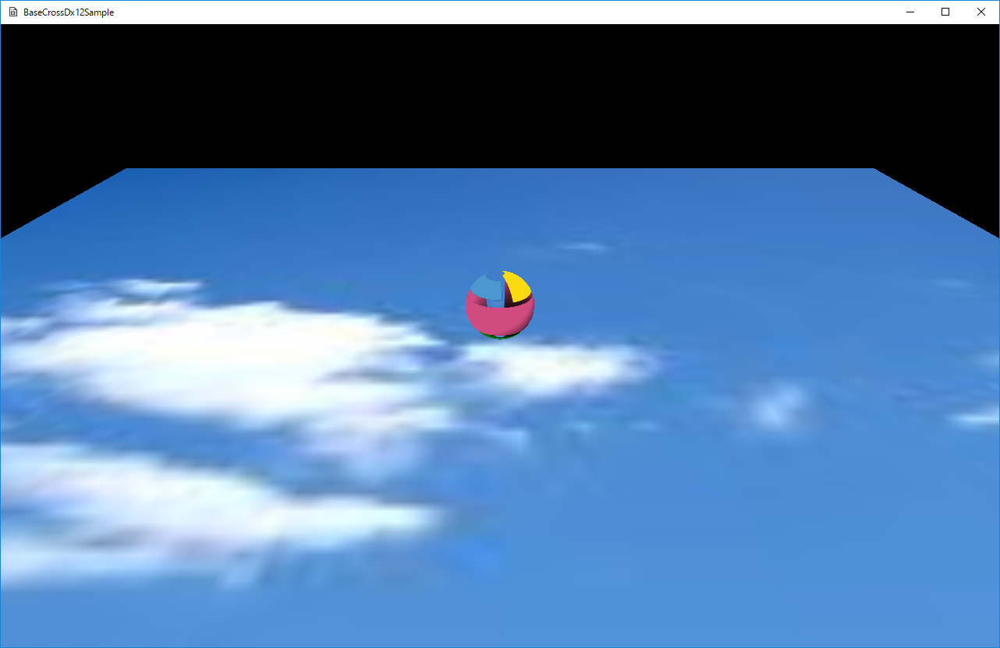

図0013a
int MainLoop(HINSTANCE hInstance, HWND hWnd, bool isFullScreen,
int iClientWidth, int iClientHeight) {
//中略
try {
//中略
//メッセージループ
MSG msg = { 0 };
//キーボード入力用
//ここに設定したキーボード入力を得る
vector<DWORD> UseKeyVec = {
'F', 'G', 'T','V',VK_LBUTTON, VK_RBUTTON
};
while (WM_QUIT != msg.message) {
if (!App::GetApp()->ResetInputState(hWnd, UseKeyVec)) {
//キー状態が何もなければウインドウメッセージを得る
if (PeekMessage(&msg, nullptr, 0, 0, PM_REMOVE)) {
//キーボードとマウス状態をリセット
TranslateMessage(&msg);
DispatchMessage(&msg);
}
}
//更新描画処理
App::GetApp()->UpdateDraw(1);
}
//msg.wParamには終了コードが入っている
RetCode = (int)msg.wParam;
}
//中略
}
void SphereObject::OnUpdate() {
//前回のターンからの経過時間を求める
float ElapsedTime = App::GetApp()->GetElapsedTime();
//コントローラの取得
auto CntlVec = App::GetApp()->GetInputDevice().GetControlerVec();
//キーボードとマウスの取得
auto Key = App::GetApp()->GetInputDevice().GetKeyState();
//位置情報の退避
Vec3 TempPos = m_Pos;
if (CntlVec[0].bConnected) {
if (CntlVec[0].fThumbLX != 0) {
m_Pos.x += (CntlVec[0].fThumbLX * ElapsedTime * 5.0f);
}
if (CntlVec[0].fThumbLY != 0) {
m_Pos.z += (CntlVec[0].fThumbLY * ElapsedTime * 5.0f);
}
}
if (Key.m_bPushKeyTbl['F'] || Key.m_bPushKeyTbl[VK_LBUTTON]) {
m_Pos.x -= ElapsedTime * 5.0f;
}
else if (Key.m_bPushKeyTbl['G'] || Key.m_bPushKeyTbl[VK_RBUTTON]) {
m_Pos.x += ElapsedTime * 5.0f;
}
if (Key.m_bPushKeyTbl['T']) {
m_Pos.z += ElapsedTime * 5.0f;
}
else if (Key.m_bPushKeyTbl['V']) {
m_Pos.z -= ElapsedTime * 5.0f;
}
TempPos = m_Pos - TempPos;
if (TempPos.Length() > 0) {
//移動した
TempPos.Normalize();
float Angle = atan2(TempPos.x, TempPos.z);
m_Qt.RotationAxis(Vector3(0, 1.0f, 0), Angle);
m_Qt.Normalize();
}
}